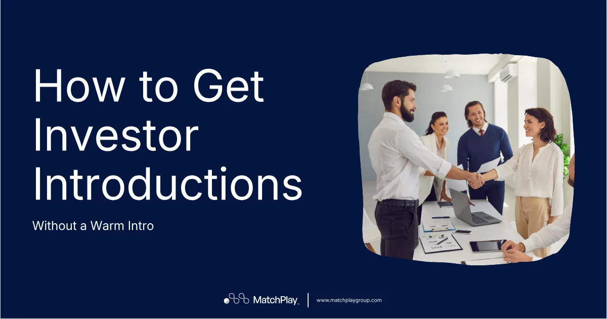
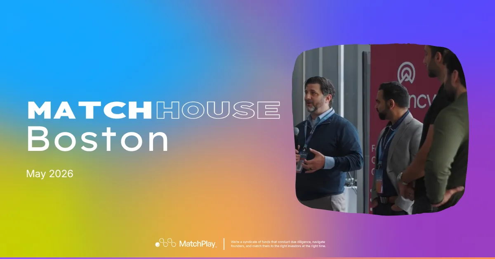
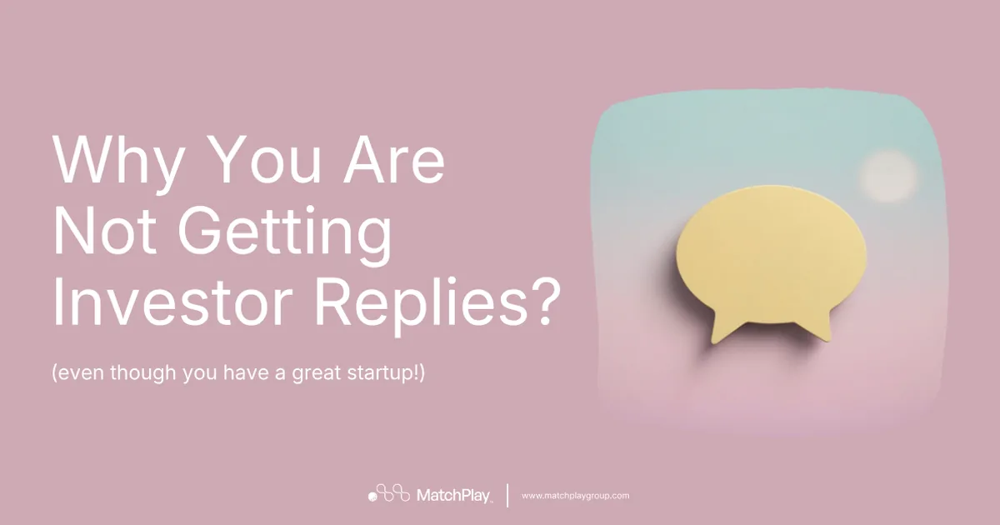
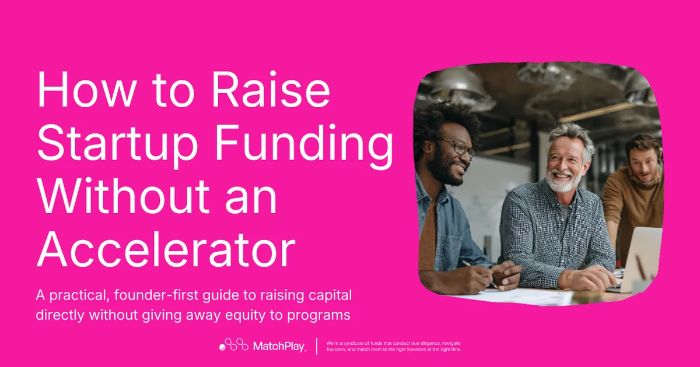
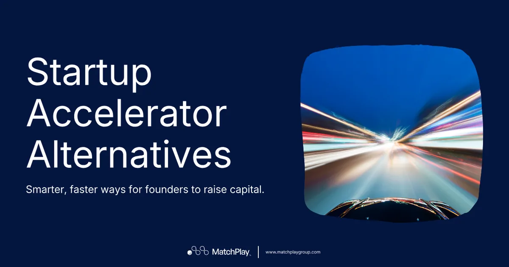
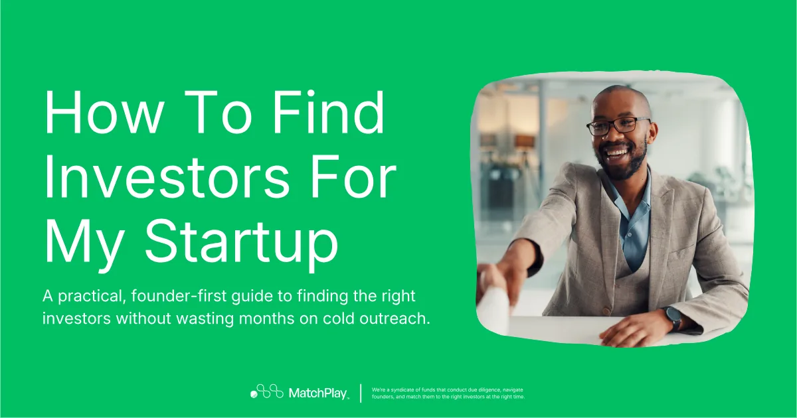
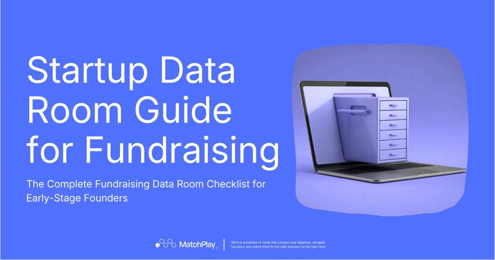
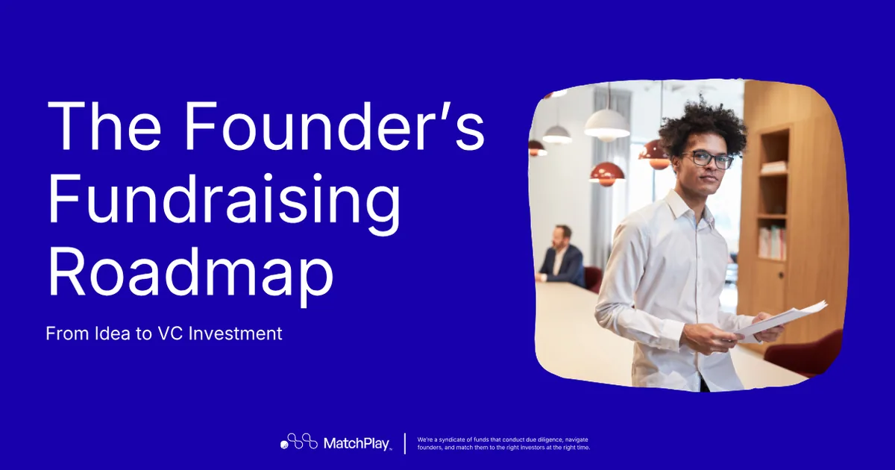

Venture Capital SPV: What It Is, How It Works, and When VCs Should Use One
What a venture capital SPV is, how it works, and when VCs should use one, plus how SPV fees, carry, legal structure, filings, and taxes work.
Explore MatchPlay’s latest blogs on venture capital, startup fundraising, founder stories, investor insights, and the networks shaping high-growth companies.
Thank you — you’re on the list.
What a venture capital SPV is, how it works, and when VCs should use one, plus how SPV fees, carry, legal structure, filings, and taxes work.

The startup due diligence red flags to fix before your seed round: the discrepancies, unsupported claims, and unresolved risks that make investors pause.

A seed round data room checklist: which documents investors need and what to share at each stage of review, from the first conversation to closing.

Score your startup before approaching investors. A structured readiness assessment to find weak assumptions, missing records, and preparation gaps.

An investment readiness checklist for startups raising a seed round: the evidence investors expect, area by area, and what the round needs to fund.

A step-by-step guide to setting up an SPV for a venture capital investment, for deals that don't fit inside a fund, from structure to closing and beyond.

No warm network? How first-time, solo, and non-hub founders can get investor introductions and reach the right investors without relying on a warm intro.

Pre-seed vs seed funding: what each stage means, what investors expect at each, and the story, proof, and ask to have ready before talking to investors.

A recap of MATCH HOUSE Boston, where founders, investors, operators, and executives met in one room on May 28 during Boston Tech Week.

Why founders don't get investor replies even with a good startup, and what to change in your investor list, outreach, and follow-up to start hearing back.

Yes, you can raise startup funding without an accelerator. A step-by-step guide to raising capital directly, without giving away equity to a program.

Startup accelerator alternatives for 2026: faster ways to get investor access, better-fit introductions, and funding without the accelerator trade-offs.

A practical, founder-first guide to finding the right investors for your startup, without wasting months on cold outreach to funds outside your stage.

A startup data room guide for fundraising: what a data room is, why investors rely on it, and the complete checklist to prepare before you raise.

The founder's fundraising roadmap from idea to VC investment: the seven stages of startup fundraising and what investors expect from you at each one.

A downloadable pre-seed due diligence checklist, in PDF and Excel, to get your startup's records data-room ready before a VC asks to see them.
Start with diligence and build the financing process from there.